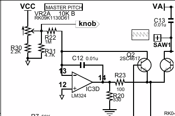

I'm trying to mod a monotron Duo so I can sequence it from Axoloti (and generally just midi→cv the thing.) So far I've got control of the keyboard and the cutoff, but in order to be really useful, I at least need to be able to manipulate the pitch control since the keyboard is a single octave.
The device runs on 2xAA (I'm powering from the Axoloti to prevent accidents) and runs the logic on 3.36v. Keyboard and cutoff are conveniently on the 3.36v rail, but the pitch knob is on a 5v rail, VCC here:

Schematic at the bottom of: https://www.korg.com/us/products/dj/monotron/page_3.php ("DUO") Nb. the "pitch" label is a computer controlled thing, not visibly exposed, and probably not something I would have any luck messing with. "Knob" is the input.
Perhaps this was doomed to fail, but I put a PN2222 across vcc and the wiper leg of the pot, with one of the PA dac outputs on the base. I do get some range out of it, but not nearly the full range. Reducing the base resistor had little effect, but the Duo did start misbehaving a little. Like the voice gate was left open. I couldn't tell you if that's a charged up capacitor somewhere, a really confused MCU, or both. (The "knob" label goes off to the MCU.)
So am I taking the right approach and just missing something, or is this doomed to fail? I am not experienced in building this kind of thing, and "soldering transistors to pots" isn't in the 101 material.
I'm also going to need to do the pwm dac thing and the only reason I bring it up is I'll be looking to use it on this pot (and others.) I'm fairly confident the filter itself is going to behave, I just want to mention it in case there might be some interaction that I should account for in the final design. I don't expect interaction, but at the end of the day idk what I'm doing.